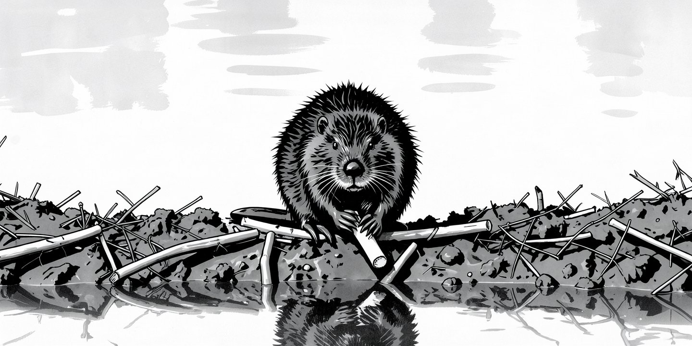
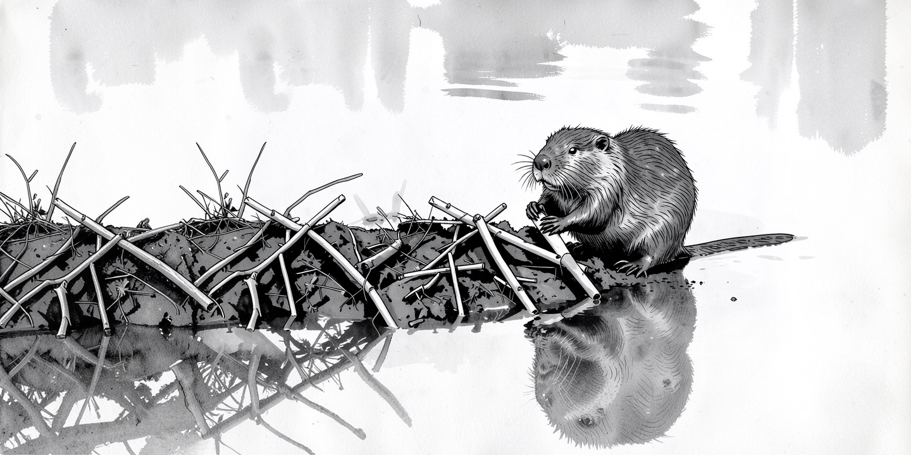

我家的主菜是大集上的圆白菜。今天多买了一捆菠菜心。嫩绿色的粗茎上有深绿色的厚叶，腰上系着红绳。顶上有好几簇亮黄色的小花，十分漂亮。
我切完豆腐块，倒进空气炸锅，定上十二分钟，炸锅就开始嗡嗡地忙上了。
我用锯齿刀立在圆白菜根处一按，“叭”，那里就断了。我一片片地揭开包菜叶，剔掉两侧的嫩叶，留下中间的叶柄，再换上菜刀切成薄片。圆白菜切完，另一边的炸锅也停了。
我取出菠菜心，解开红绳，放平整捆菜心，让粗茎冲前。我右手提刀，左手按菜，从菜茎切到菜花。一分钟不到，切完了。
离午饭还早，我回到电脑前，继续弄我文章的配图。
以前，配图都是我自己动手。右手的光标在一段英文开头按下，拖下来几行，停在段尾。左手在键盘上按下复制键，再把光标挪到浏览器的页面，找到文生图工作流，点在文字框的空白处，左手按下粘贴键。那段描写就粘过来了。描写的内容是 AI 生成好的配图提示词。
我向右拖动流程图，露出配置节点，找到「生成字段」，改成「随机」，然后按下回车键。生图软件 ComfyUI 开始工作了。
我又按了五下回车，排上了五个任务。我的 Mac mini 上生一张图大概 3 分钟。我可不想盯着电脑生图。一次排满更方便。二十分钟后，我再回来选一张最好的。
一周之内我要写两三篇文章。每篇要配一张封面。以前那套操作只是配图流程的第一步。后面还有扩大画面和转换风格。每一步跑完，我都得回到电脑前挑图，再排下一步。一套跑完要近五十分钟。还没算上我选图、调图的时间。每次文章还没写，配图已经让我头大了。时间长了，我都不太想写文章了。
今天，我把这活交给 AI 了。
我和 Claude Code 说，你看，这三个工作流是我平时用的，你建个助手帮我干了吧。可以叫她 Jenny。
它三下五除二把 Jenny 建出来，从此我多了个封面制作助手。我把 AI 做好的提示词存成文件，Jenny 会自己跑那三个流程。她自己选图、扩图、换样式。我不用惦记着回来看一下了。
有篇「把时间账迁出来」的文章，要配河狸修水坝的图。我就拿它试手吧。Jenny 接过活开始忙，我倒闲下来了，光标在其它页面里点来点去，一会刷下邮箱，一会翻翻论坛。我忽然想起菜还没炒，便从电脑前站起，走回厨房。
等菜炒完了，锅也刷干净了，我才想起 Jenny。我的手在麻布上抓干，弯腰点去屏幕保护；一幅尺寸正确，和以前的封面风格相近的配图静静地开在那里。一只河狸蹲在泥巴堆起的小坡上，手里拿着一节树枝，直愣愣地瞪着镜头。

我回神想了想，这顿午饭做得真踏实。我不用老想着中间去看看图片生好了没有，也不用惦记着扩成多大尺寸合适。换作以前，按老路走一遍，我是不能安心做午饭的。我算了下时间，和以前用时差不多，可中间那几趟来回全省了。
不过河狸在图的正中，看着堵心。Jenny 不知道主角应该放边上，画面才有透气感。
我告诉 Claude Code，让它更新 Jenny，再来一次。等吃过午饭，刷完碗，我回来再看，Jenny 已经重画好了。她还留意了河狸的眼神，站在右边的河狸，眼神看向左边刚修好的水坝。

即使 Jenny 开始几轮表现不好也没关系，有我在最后把关。「主角放边上」写进了 Jenny 的说明书，每次生图她都会先“读”一遍。这样的要点再多几十条也不叫事儿。记在我脑子里的，多了肯定记不全；写进说明书里的，才稳当。到时候，我想的就不如她周全了。
我当个监工挺好，细节让 Jenny 去跑。
饭后，我出门散步。冬天午后的阳光在一点是最好的。我把衬衣袖子撸上去，让更多的皮肤晒到太阳。单薄的运动鞋里，脚趾已经走热了。回想起上午切菠菜心，真省事啊。整捆放平，一刀从茎切到花。我之前一片片地剥菜，配图也是，一步步自己盯着，怎么就没想过整捆交出去呢？！